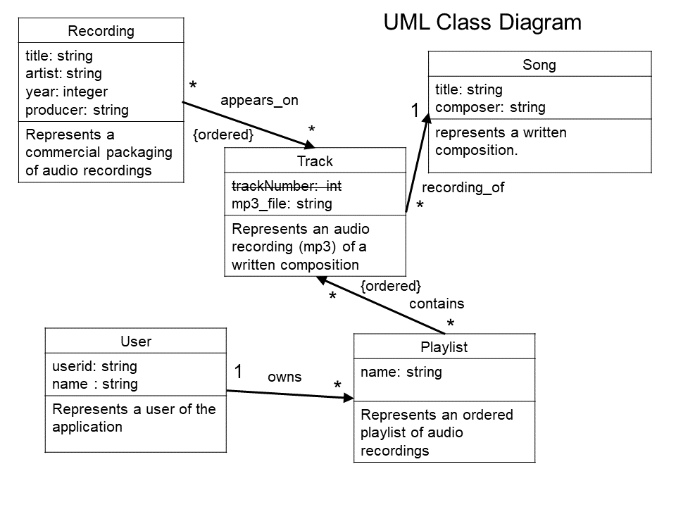
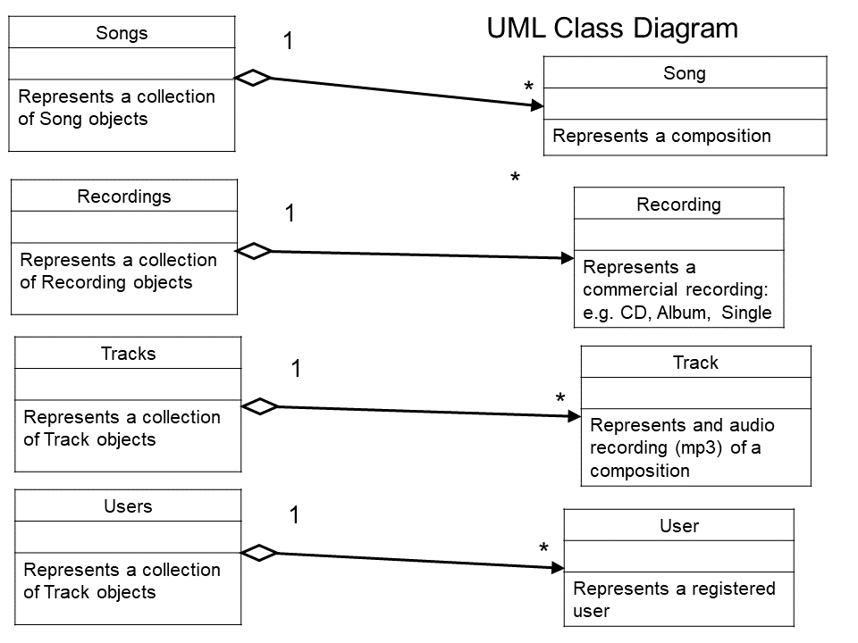

Assignment Submissions Instructions: Assignments must be submitted via culearn by the due date and time. Late assignments will not be accepted. See the Development Process Requirements below for what exactly to submit and how.
***Although it is intended that you build assignment #2 from your own assignment #1 code, you may also use whatever answer code we post for assignment #1 as your starting point. (Please put a note to that effect in your code so the TA's are aware of it when marking.)
You may work on assignments in pairs if you want, in which case only one copy should be submitted with both your names on it files. If neither submits, because they thought the other one would, both get a mark of 0.
REV 4: 2017 10 23: -It was discovered that in the beatles_tracks.db database recordings with id=100 and id=101 have been modified to be 113 and 112 instead. This has been fixed in beatles_tracks_rev1.db. Now there recordings are numbered 100-111 and the tracks correctly refer to those recordings id's.
REV 3: 2017 10 15: -Minor typos and edits.
REV 2: 2017 10 14:
Several students have now observed, and recommended, that the user data model from assignment #1 be brought in line with the development data model of this assignment #2. This has been done and a new beatles_tracks.db database has been added along with a insert_beatles_tracks.txt demo script file to serve as an example: (This is straight forward to do because the data is in a database and so easily manipulated) Here is a summary of the changes:
Playlists now refer to Tracks (and not Songs as in Assignment #1)
Tracks now have a unique ID just like Recordings, Songs, and Users.
old demo command: add -t albumID songID track_number
new demo command: add -t trackID albumID songID track_number
Tracks are added to playlists based on trackID not songID
old demo command: add -l userID playlistName songID
new demo command: add -l userID playlistName trackID
REV 1: 2017 10 13:
Students found a couple of data errors in the beatles.db database (there was a missing song and 2 tracks referred to songs that did not exist -referential integrity errors. I've posted a new version beatles_rev1.db and a new sample insertDataScript.txt with the assignment that fixes these issues. (I also posted the sql script I used to generate the commands.) Replaced by REV 2 data model)
Also the UML class diagram has been changed to reflect the fact that Track objects might not want to store the trackNumber and instead there is now just an {ordered} relationship between Recording and Track instances. That is, you can handle the order in which tracks appear on a recording however you like.
All assignments will be based on itemized requirements. There will be four categories of requirements: Process Requirements, Functional Requirements, System Requirements, and Domain Requirements.
Process requirements (aka Software Engineering Requirements, Development Process Requirements, Good Practice Requirements) are requirements imposted by the software development process that is being followed by the developers. Here they include the requirements on how to submit your assignments sucessfully and have them marked. They do not have anything to do with the specific application being developed, but rather pertain to the development process that will be used for the course. They include the requirements that reflect how your assignment will be tested and marked. In assignments you will not get marks for meeting process requirements, instead you lose marks if they are not met -in some cases ALL of your marks.
Functional, System, and Domain requirements all pertain to the actual application being developed. Collectively these are referred to as the Design Requirements. In assignments you will get marks for those design requirements that are met. So the number of these requirements determine what the assignment will be marked out of.
Functional Requirements (aka User Requirements) pertain to what the user wants to do with the app and how it is to be operated. If a functional requirement is not met one would expect a user or client to notice that. Functional requirements should make sense to the intended user or client. They should not contain references to "objects" in the object-oriented programming sense.
System Requirements (aka Constraints) are requirements imposed on the developer to make the development profitable (or evolvable, or resuable, ...). If a system requirement is not met the user, or client, of the app would likely not be aware of that. For example, the user of your app is not aware of whether you used objects to implement it or not. System requirements can make reference to "objects" in the object-oriented programming sense because the developers understand that.
Domain Requirements (aka Legal Requirements) are requirements imposed by the domain, or demographic, in which your app is intended to operate. For example, if you are making a PG13 movie about object-oriented development then the requirements that must be met for a movie to be considered PG13 are domain requirements. (Treating people as objects might be considered inappropriate for a young audience; treating objects as people will likey garner an R-rating.)
It will be an ongoing challenge in the course to fit requirements into one of the four categories. In real life there are often many more catagories.
Requirements Numbering
All requirements (worth marks) are itemized and identified with a requirements number and letter code that places them in one of the above categories. Requirements numbers that start with 1 were introduced in assignment #1 and and still apply. Numbers that start with 2 were introduced in assignment #2 etc.
FR 2.16 [FR1.16] means requirement FR2.16 adds detail to, or refines, existing requirement FR1.16.
FR 2.16 [FR 1.12] means requirement FR2.12 replaces FR1.12 and that FR1.12 no longer applies.
Unless otherwise indicated, all requirements from the previous assignment(s) applies to this one.
This assignment is based on 32 specific design requirements DR2.1... FR2.16 and we will be awarding 2 marks for those you are able to satisfy for a total of 64 marks. (Some domain requirements are met automatically if the features they apply to is not yet being developed in this phase.) You will get 2 marks for each design requirement that is satisfied, well implemented and demonstrated through your testing output. You will get 1 mark for any design requirement only partly met, or met but not well implemented or not demonstrated in your testing. You get 0 for any requirement not satisfied. Conversely you lose marks for any Process Requirement not met as indicated below.
The following requirements will pertain to all your assignments regardless of what your application is supposed to do (i.e. regardless of the design requirements). These requirements are intended to ensure that your code is readable and maintainable by other programmers (or markable by TA's in our case), robust (it does not crash from bad pointer references or memory allocation problems), and following good object-oriented programming practice. You will lose 5 marks from your total assignment mark for each of the following requirements that is not satisfied. However if you do not satisfy requirement PR0.1, PR0.2 or PR0.3 you will get zero for the assignment mark.
PR0.1)[Assignment mark = 0 if not met] IMPORTANT Uniqueness Requirement. The solution and code you submit MUST be unique. That is, it cannot be a copy of, or be too similar to, someone else's assignment, or code found elsewhere. A mark of 0 will be assigned to any assignment that is judged by the instructors or the TA's not to be unique.
(You are however free to use any code posted on our course web site as part of the course notes or example code provided in the notes, assignments or tutorials.)
PR0.2) [Assignment mark = 0 if not met] CODE SUBMISSION REQUIRMENTS: For the purposes of assignments your code and supporting documents must be submitted to culearn and comply with the following.
1) You should submit C++ source code files and any supporting documentation and data files required and, when appropriate, the associated make file to assist the compilation. Your name and student number should be at the top of each file. There should always be a ReadMe.txt file with your assignment. If you are working with a partner, both names and student numbers must appear on the files and only submit one copy of the assignment to culearn.
2) COMPRESSION If your assignment files are compressed we will accept only .tar, .tar.gz, or .zip format compatible with one of the following three linux commands for extraction:
tar -xvf filename.tar
tar -xvf filename.tar.gz
unzip filename.zip
3) ReadMe.txt: Your assignment must be accompanied by a ReadMe.txt file in which the following should appear:
-Which extraction command should be used to uncompress your assignment files.
-Which g++ compiler or make command should be executed to compile your code.
-Instructions on what script, or scripts, to run to demonstrate your testing.
4) In general you should provide a testing script, or main program, that runs appropriate test cases to demonstrate that the design requirements are being met. (Not all requirements can be demonstrated like that, but functional requirements usually can be -especially if we are building command line applications.)
PR0.3) [Assignment mark = 0 if not met] CODE COMPLILATION and TESTING:
The TA must be able to compile your code using the g++ compiler installed in our 2404-240-F17.ova virtual linux image. (A current gcc installation should be compatible with that, but you should check.). The TA will run the g++ or make command specified in your ReadMe.txt file and when compiling is complete run your exectuable to begin verifying the assignent requirements. If your code cannot be compiled as described the assignment mark will be zero. (The TA's will not debug your code in an effort to get it to compile.)
PR0.4) CODE ORGANIZATION: You code files should contain only one .cpp file containing the substring "main" in the title and that file should have the int main() entry point function for your code. Your object-oriented classes should each be represented in two files classname.h and classname.cpp. The .h header files should contain only type declarations and not code definitions (method bodies).
PR0.5) VARIABLE AND FUNCTION NAMING: All of your variables, methods and classes should have meaningful names that reflect their purpose. Do not follow the convention in math courses where they say things like: "let x be the number of customers and let y be the number of products...". Instead call your variables numberOfCustomers or numberOfProducts. Your program should not have any variables called "x" unless there is a good reason for them to be called "x". (One exception: it's OK to call simple for-loop counters i,j and k etc. when the context is clear and VERY localized.)
PR0.6) MEANINGFUL CONSTANT NAMES: Constant values should have meaningful names and not just be represented as numbers or strings in expressions. For example don't say:
cin.getline(input, 80);
rather say:
cin.getline(input, MAX_INPUT_LENGTH);
PR0.7) PRIVATE VARIABLES: All variables in your classes should be private, unless a specific design requirements asks for them to be public (which is unlikely). It is good programming practice to design objects that provide services to others through their public methods. How they store their variables is their own private business. C or C++ unbounded arrays should not be used as public data structures. They should be encapsulated in a class that takes care of their length or number of elements. Also methods used soley by a class for its own housekeeping, and which are not considered part of the public inteface, should be in the private section of a class.
PR0.8) ROBUSTNESS REQUIREMENTS: Your program should not crash when the TA is marking it because of a bad pointer dereferences, out of bounds error memory access, or memory leaks or double deletions. We get especially annoyed by out of bounds "off by one" errors! Your code should not have any memory leaks or double deletions. Moreover the heap memory should be empty when your procedure main() returns. That is, all heap objects should be properly deleted before the program ends.
PR0.9) COMMENTING REQUIREMENTS: Comments in your code must coincide with what the code actually does. It is a common bug in industry for people to modify code and forget to modify the comments and so you end up with comments that say one thing and code that actually does another. Don't use comments to clarify poor variable or method names -instead choose good variable names and method names that makes the code more "self-commenting".
PR0.10) OUTPUT LABELING REQUIREMENTS: Your testing output that you hand in, or that results from the scripts you submit, must have sufficient comments or remarks so that the output can understood. Don't have your program just write out a bunch of integers with no indication of what they mean or what the test they supposedly demonstrate. The TA's should be able to read and understand your output WITHOUT having to look at your code to see what the output means. It is a good idea to refer specifically to the numbered design requirements in your output to help indicate which requirement you are demonstrating.
VERY IMPORTANT:
Requirements tend to make sense to the person who wrote them because that person knows what they were trying to say. You don't know what they were trying to say, only what they did actually say. So you need to ask LOTS of questions when things are not clear. A picture is worth a thousand words and a requirement fix is worth a thousand programing fixes.
Any sample code fragments, models, or requirements provided with assignments might have bugs (although none are put there intentionally). It is part of your job to identify errors and seek clarification.
This development project pertains to the scenario detailed in the Background section of Assignment #1.
While the developers (you) were creating the command language and user interface in Assignment #1 the senior architects developed an in-memory data model to represent the user and song data that the application manages. They have come up with the following in-memory data model expressed as UML class diagrams. (REV 1: new class diagram)

They have also specified that the application should manage the following in-memory collections.

The UML diagrams provide the names of the intended classes however the collections could be simple containers like:
vector<Song> songs;
vector<Recording> recordings;
vector<Track> tracks;
vector<User> users;
It depends on whether you want particular methods associated with the collections. Note the UML class diagrams specify some properties that the application must support however you are free to add whatever others you need. Tracks include an mp3 file attribute since the application will eventually be used to play mp3 files however no requirements in this assignment scope make use of it.
The UML diagrams do not specify any methods. You are free to design the methods you feel are appropriate.
An independent collection of Playlists is not being specified and these a presumably a property of User objects. You may however implement it as you see fit.
All objects of type Song, Recording, Track, User or Playlist shall be heap-based (dynamic) objects and shall be represented only once in memory. All associations represented in the UML class diagram shall be implemented with references or pointers or by placing objects in appropriate collections.
The application will be required to maintain Referential Integrity at all times. Referential Integrity requires that at no time can you refer to a non existing object. For example, if a song is removed from the songs collection then no playlist or track should refer to that song since it no longer exists.
This development phase (assignment) has the following scope.
For this assignment you will implement the in-memory data model specified above and then fully implement the commands designed in assignment #1 to have them operate on the in-memory data. That is, when your commands are executed the appropriate data objects of type Song, Recording, Track, User, or Playlist will be created and the appropriate relationships establised by adding the object to the proper container or establishing the reference or pointer links that are needed. The "display" commands need to actually show what is currently in the data model.
The application will be initialized by the script you designed in assignment #1 and should account for all the data in the beatles.db database from assignment #1 and contain whatever other data is required to illustrate the operation of your commands on the actual data.
The following known requirements are being left out of this phase (assignment): searching for songs and recordings by title, authentication of members. There are no persistence requirements in this assignment. That is, your data changes, as a result of your commands, do not have to be saved to disk for the next time the application launches.
The main C++ programming capabilities you will likely need for the assignment are:
Working with vector<> containers or other containers you choose.
Designing appropriate methods for classes and adding needed attributes.
Working with dynamic memory allocation using new and delete.
Implementing proper constructors, destructors and assignment operators as needed.
Overloading the << output stream operator for the data classes you create.
DR2.1) [DR1.1] Any song, CD, or Album titles or any band names should always be displayed for the user in title case. That is, the first letter of each word should be capitalized and any title or name that starts with the word "The" should be displayed with the "The" at the end. (e.g. The Beatles should be displayed as Beatles, The) Any commands that display such strings for the user should display them in title case.
DR1.2) Any searches for song titles or recording titles should ignore both case and punctuation. For example "take the A train" should match "Take The 'A' Train". (We are not implementing search in this assignment so this should "automatically" be satisfied.)
DR1.3) Any searches for song titles or recording titles should accept placeholder characters repesented by a "*". From example "* Ipanema" would match "The Girl From Ipanema". (We are not implementing search in this assignment so this should "automatically" be satisfied.)
SR1.1) The application should be written in C++ and have a command line interface.
SR1.2) The application code should be fully object-oriented. That is, except for the int main(){} entry point function and maybe some initialization helper functions, all funtionality should be through methods of some class (either static or instance methods).
SR2.3) [SR1.3] The application should decouple data objects from those used to implement the user interface or application control. Specifically the objects of type Song, Recording, Track, User, or Playlist should have NO awareness of the user interface or application control objects.
SR2.4) [SR1.4] Data objects of type Song, Recording, Track, User and Playlist should be represented as a single instance and never copied. For example, if a Track object appears on several Playlist instances, the playlists should refer to a single Track instance and not have separate copies of the Track object. Playlists, for example, could "point" to Track objects or could contain state information, like id or title, that could be used to locate the actual Track object.
SR2.5) Classes Song, Recording, Track, User, or Playlist should be implemented to represent those described in the UML data model.
SR2.6) Objects of type Song, Recording, Track, User, or Playlist should be allocated on the heap (with new) and properly deallocated (with delete) when no longer needed. There should be no memory leaks or double deletions involving your heap objects.
SR2.7) Objects of type Song, Recording, Track, User, or Playlist should each implement an overloaded << operator so they can be output to cout using cout << aSong; syntax. The output should respect the title case requirement DR2.1.
SR2.8) The application should maintain the in-memory collections for songs, recordings, tracks, and users. These could be implemented as classes specified in the UML class diagram or by using simple c++ containers, for example:
vector<Song> songs;
vector<Recordings> recordings;
vector<Tracks> tracks;
vector<User> users;
SR 2.9) Playlists shall be implemented as a property of User objects and not as a separate data collection. For example User objects might maintain their own private collection vector<Playlist> property. Playlists shall not be accessible unless a user is specified.
SR2.10) All associations on the UML class diagram provided by the architects shall be implemented with pointers, references or by placing objects in an approriate container.
SR2.11) The implementation shall comply with cardinalities (multiplicities) specified in the UML class diagrams.
SR2.12) The application shall maintain referential integrity at all times. Referential integrity requires that at no time can the data refer to an object that does not exist. For example if a song is removed from the application by removing it from the songs collection it cannot be referred to by a Playlist or Track object.
SR2.13) Referential Integrity shall be resolved using a "Delete With Extreme Prejudice" policy. This policy requires that any references to a non existing object should be removed. For example, if a song is removed from the songs collection then any references to it should be deleted by, for example, removing playlist items or removing Track objects from the tracks collection.
For this assignment the commands all have to work and result in the correct in-memory data. The "show" or "display" commands must show the actual data the user is requesting. Most of the requirements are repeated from assignment #1 but the testers will be determining that they actually work on the data. Also they are repeated to allow you to change your command language. You do not have to implement the exact language you proposed in assignment #1.
Note in the descriptions below commands that appear in "" quotation are meant only to convey what the command might do and are not meant to suggest what the command name or syntax should be. Also an important design decision is whether a particular command is a "script-able" command or only pertains to using the interactive command line.
The TA's will be testing your interface but will do so only after running the two scripts you are required to provide: one that will enter all the data from the beatles.db database and another to demonstrate that the functional requirements are being met (e.g. one that illustrates each command you are responsible for.) Without these scripts the requirements below will be deemed not to have been met.
FR1.1) The command language syntax should always start with command name followed by whatever arguments are required for the command to execute. (Not unlike the terminal commands in linux or DOS shells). The commands should be scriptable (one complete command per line of text) but the interactive interface could use multiple lines and prompts. Commands that are "command shell only" should start with a "." dot. For example, if help is a shell only command the command name should be .help. The arguments of a command should be separated by blanks.
FR1.2) When the application launches it should present the user with a command line terminal and prompt ready to receive commands. When a command executes the results should be displayed for the user followed by another prompt and be ready to receive the next command. (Again not unlike the bash terminal in linux or DOS).
FR1.3) The application should have a "help" command to show, or remind, the user what the available commands are.
FR2.4) [FR1.4] The application should have "display" or "show" commands to display the various collections: recordings, songs, users, users's playlists etc. Using this command the user should be able to view the current contents of the actual songs, recordings, tracks, and users collections implemented in the data model.
FR2.5) [FR1.5] There should be commands to display what playlists a particular user owns. Using this command the user should be able to view the current Playlist objects that a user owns.
FR1.6) There should be commands to display what songs appear on a particular playlist of a particular user.
FR2.7) [FR1.7] There should be "add" commands to add new items to the recordings, songs, tracks, and users and also add new Playlist instances to a particular User object.
FR2.8) [FR1.8] The commands should allow establishing all the relationships that exist in the data model. For example: associating tracks with recordings, or playlists with users, or tracks with user playlists.
FR2.9) [FR1.9] The application should have "delete" commands to delete recordings, songs, tracks, users, or playlists. Also the application should preserve referential integrity if items are deleted. For example if a song is deleted from the application then it should also be deleted from any playlists it appears on or any tracks that refer to it etc.
FR2.10) [FR1.10] The commands should allow the deletion of tracks from a playlist to only affect that playlist or optionally permanently deleting the track from the application altogether (including from other playlists on which might appear).
FR1.11) The command line interface should include a shell only "read" command that will allow a user to read and execute commands from a script file. The script file would be expected to have one scriptable command per line. Once a script file has been read the interface so go back to the interactive REPL mode.
FR2.12) [FR1.12] Since the application provides for reading a script of commands, it should be used to initialize the entire data set with a script of commands. That is, load the application on startup from a script file written in the same command language to account for all the data in the beatles.db [rev2:] beatles_tracks.db database.
FR1.13) There should be a "logging" command that allows users to start and stop the logging of executed commands. Logging would record the commands the user is executing and allow them to save an audit of those to a file.
FR1.14) The "logging" command should allow users to log only the commands executed but not their responses, or both the commands and responses. [Notice with the logging functionallity it would be easy to make testing output and demonstrate the correct behaviour of the program.]
FR1.15) There should be a "comment" command that would allow a user to add comments or remarks to their console session or log output. This could be useful for inserting remarks within a logged session explaining what the commands are doing or testing. It should be possible to have comments in the script files that are executed with the read command [see FR1.11].
FR2.16) [FR1.16] Two scripts must be included with your submission, written in the designed command language. One that would initialize the application with the complete data of the beatles.db sample database. This script should end with the commands that show the contents of the data model. That is, would display the contents of all the collections including the user playlists. The other script should demonstrate that all the above commands that affect the data model have been implemented and the script should use "show" commands to demonstrate that the data has been altered. The TA's might provide a model scripts that they want you to run.